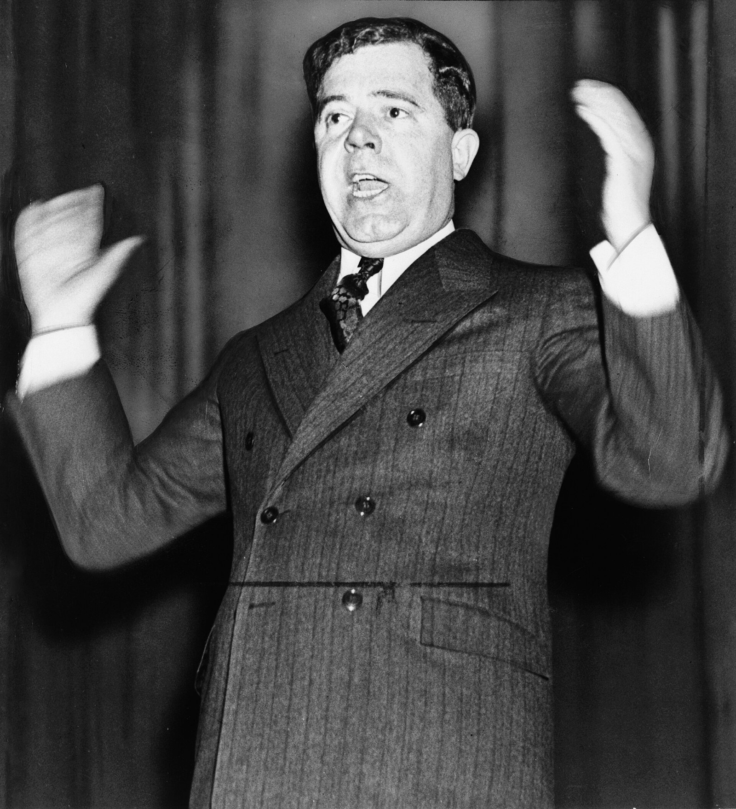
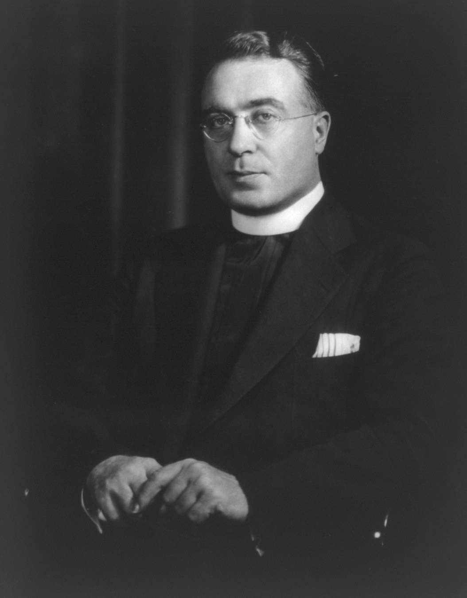

Directions: Work through the five stations in order. Each station presents one attack on the New Deal as it stood in 1935: three that said it did too little, one that said it did too much, and one that struck it down. Answer the questions at each station. At the end, build the pressure map and judge which pressure President Roosevelt had the most reason to answer in 1935.
Source: Senator Huey P. Long, Share Our Wealth radio address, February 23, 1934, as printed in Long's official Share Our Wealth pamphlet. Passages are quoted from that printing. Cuts are marked with ellipses.

"Now, we have organized a society, and we call it 'Share Our Wealth Society,' a society with the motto 'Every Man a King.' ... We do not propose to divide it up equally. We do not propose a division of wealth, but we propose to limit poverty that we will allow to be inflicted upon any man's family. ... there should be a guarantee of a family wealth of around $5,000; enough for a home, an automobile, a radio, and the ordinary conveniences, and the opportunity to educate their children ... Another thing we propose is old-age pension of $30 a month for everyone that is 60 years old. ... We have to limit fortunes."
Long says his society does not propose a division of wealth. What does it propose instead, and what two guarantees does he name in these passages?
Who pays for the guarantees under Long's plan, according to the final sentence quoted? Explain the mechanism in one or two sentences.
Source: Summary of the Townsend Plan as circulated by Townsend clubs and stated in Dr. Francis Townsend's published plan, prepared for this lesson from the plan's stated terms. It is a summary, not a transcription of one surviving petition.
The Townsend Plan proposed that the federal government pay every citizen over the age of sixty a pension of two hundred dollars a month. To receive it, a pensioner had to give up regular work for pay. The pensioner also had to spend the entire payment within the month, inside the United States, so that the money moved at once into stores and businesses. Supporters proposed to fund the pensions with a tax of two percent on business transactions. Townsend clubs collected signatures on petitions calling on Congress to pass the plan, and the petitions reached Washington carrying millions of names.
The plan attached two conditions to the pension. Name both, and explain what each condition was designed to do to the economy.
Two hundred dollars a month was more than many working families earned. Why might that size have been the plan's greatest strength as organizing and its greatest weakness as policy?
Source: Summary account of Father Charles Coughlin's broadcasts and of the National Union for Social Justice, founded November 1934, prepared for this lesson from published accounts of the broadcasts. Coughlin's broadcast wording is summarized here, not quoted.

Coughlin began broadcasting from the Shrine of the Little Flower in Royal Oak, Michigan, and by the early 1930s his Sunday talks reached an audience counted in the tens of millions. He supported Roosevelt in the election of 1932 and in the first New Deal season. He then broke with the administration, arguing in his broadcasts that the money system itself was the root of the Depression. Published summaries of the broadcasts describe a program of monetary change, including action against the Federal Reserve and the private control of credit, together with public control of key industries, all framed as a contest between the ordinary people of the country and a small circle of financiers. In November 1934 he organized his listeners into the National Union for Social Justice, so that the audience could act as a political membership between elections.
What changed between Coughlin's position in 1932 and his position by the end of 1934? Answer with the organization he founded as your evidence.
Long and Townsend built clubs. What did Coughlin build, and why was a radio audience a different kind of political weapon than a club network?
Source: Summary of the American Liberty League's stated purposes and arguments, prepared for this lesson from the League's published declarations and pamphlets of 1934 and 1935. It is a summary, not a transcription of one pamphlet.
The American Liberty League was organized in August 1934. Its officers and funders came from large business and from the conservative wing of the Democratic Party, and it announced that it would defend the Constitution, protect private property, and oppose the growth of federal power. In its publications the League argued that New Deal spending was piling up public debt, that federal agencies were regulating business beyond the authority the Constitution granted, and that relief and planning measures moved the country toward government control of economic life. The League published pamphlets, placed statements in newspapers, and testified against administration bills. It enrolled no mass membership and ran no candidates of its own.
State the League's three main charges against the New Deal as the summary gives them.
The League had money, lawyers, and newspaper access, but no mass membership. What could it not do that Long's and Townsend's organizations could do?
Source: Syllabus of Schechter Poultry Corporation v. United States, 295 U.S. 495 (1935), United States Reports. The syllabus is the Court's own summary of the decision, printed at the head of the opinion. Points 1 and 2 are quoted in full. Point 4 is quoted with cuts marked by ellipses.
"1. Extraordinary conditions, such as an economic crisis, may call for extraordinary remedies, but they cannot create or enlarge constitutional power.
2. Congress is not permitted by the Constitution to abdicate, or to transfer to others, the essential legislative functions with which it is vested.
4. The delegation of legislative power sought to be made to the President by section 3 of the National Industrial Recovery Act ... is unconstitutional ..., and the Act is also unconstitutional, as applied in this case, because it exceeds the power of Congress to regulate interstate commerce and invades the power reserved exclusively to the States."
The case arose from a Brooklyn poultry company prosecuted under the live poultry code. The decision was unanimous. Point 3 of the syllabus, on the standards Congress must set when it delegates, is not printed here; the omission is marked by the jump from point 2 to point 4.
Point 1 answers an argument the government had made from the emergency itself. State that answer in your own words, and say why it closed the door on defending other New Deal laws by pointing to the Depression.
Points 2 and 4 give two separate constitutional defects in the Recovery Act. Name both, and for each one name what the National Recovery Administration lost as a result.
Complete the map from your station work. For each attack, record the source, the charge, the cure it proposed or the limit it imposed, and the voters or power it could move.
| Attack | Charge | Cure or limit | Voters or power it could move |
|---|---|---|---|
| Long | |||
| Townsend | |||
| Coughlin | |||
| Liberty League | |||
| Supreme Court |
Judge the map. Which pressure did Roosevelt have the most reason to answer in 1935? Defend your answer in a short paragraph, using evidence from at least two stations and explaining why the pressure you picked outweighed the others.
What does the society propose instead of a division of wealth, and what two guarantees does Long name? It proposes to limit the poverty that will be allowed to be inflicted on any family, by limiting fortunes at the top rather than by dividing wealth equally. The two guarantees in the passages are a family wealth floor of around $5,000, described as enough for a home, an automobile, a radio, ordinary conveniences, and schooling, and an old-age pension of $30 a month for everyone aged sixty.
Who pays, and by what mechanism? The holders of large fortunes pay. Long states the mechanism in the last quoted sentence: fortunes themselves are limited, so the wealth above the cap is taken down and spent on the guarantees. The cap does the funding; there is no separate tax named in these passages.
Name the two conditions and what each was designed to do. The pensioner had to give up regular work for pay, which was designed to open jobs for younger workers. The pensioner had to spend the entire payment within the month inside the United States, which was designed to push the money at once into stores and businesses and restart demand. The proposed funding was a two percent tax on business transactions.
Why was the size both a strength and a weakness? As organizing, two hundred dollars was a single plain figure every older American could repeat and measure against an empty purse, and it promised enough to live on, which is why clubs and petitions multiplied. As policy, paying it to every citizen over sixty would have cost a large share of the national income, and the transactions tax proposed to fund it fell on the same spending the plan meant to encourage, which is the objection economists pressed at the time.
What changed between 1932 and the end of 1934? Coughlin moved from supporting Roosevelt and the early New Deal to open opposition, blaming the money system and the administration that kept it. The evidence is organizational: in November 1934 he founded the National Union for Social Justice to turn his listeners into a membership that could act between elections, a step a supporter does not take against a president he still backs.
What did Coughlin build, and how was it different from a club network? He built a listening audience organized into a national union. A club network meets in rooms, enrolls members town by town, and can deliver petitions and local pressure, as Long's and Townsend's did. A radio audience is gathered at one hour each week by one voice, at national scale and at almost no cost to the listener, and it can be addressed again instantly. Its weakness is the reverse of the club's: it is a crowd that listens more readily than it acts, which is why the National Union was founded to give it form.
State the League's three main charges. New Deal spending was piling up public debt. Federal agencies were regulating business beyond the authority the Constitution granted. Relief and planning measures moved the country toward government control of economic life. The League framed all three as a defense of the Constitution and of private property.
What could the League not do? It could not move voters in mass. With no mass membership and no candidates, it could publish, testify, and fund arguments, but it could not fill petition lists, pack congressional districts, or threaten a president's reelection the way the Long and Townsend organizations could. Its natural arena was print and the courtroom rather than the ballot box.
State the answer in point 1 in your own words, and why it mattered beyond this case. An emergency can justify unusual remedies, but it cannot add to the powers the Constitution grants; the powers stay the same size in a crisis as in calm times. That closed the door on defending other New Deal laws by the size of the Depression itself, because every later defense would have to rest on a power the Constitution already contained, argued without help from the emergency.
Name the two defects in points 2 and 4, and what the NRA lost for each. First, unlawful delegation: Congress had handed its essential legislative functions to the president by letting him approve industry codes without laying down the policy and standards itself. For this defect the NRA lost the code system itself, the legal basis of every fair competition code. Second, commerce: as applied to a local poultry business, the act reached past interstate commerce into power reserved to the states. For this defect the NRA lost reach over business conducted inside a state after goods had come to rest there.
A completed map should record, in the student's own words: Long, source a Senate seat and a club network, charge that the New Deal left great fortunes untouched, cure a fortune cap funding a family floor and a pension, power over millions of claimed members and a possible 1936 candidacy. Townsend, source a pension movement of clubs and petitions, charge that the New Deal gave the old no security, cure two hundred dollars a month spent within the month, power over organized older voters in nearly every district. Coughlin, source a radio audience organized as the National Union, charge that the money system and the administration protecting it caused the slump, cure monetary change and public control of key industries as summarized from the broadcasts, power over a weekly national audience. Liberty League, source wealthy businessmen and conservative Democrats, charge debt, regulation beyond the Constitution, and drift toward government control, cure a return to narrow federal power, power in print, testimony, and law rather than in votes. Supreme Court, source the Constitution as the Court read it, charge delegation and overreach of the commerce power, limit the voiding of the Recovery Act in Schechter and of the AAA tax in Butler, power to end programs outright.
Student judgments will vary. Full credit requires a named pressure, evidence from at least two stations, and a reason the chosen pressure outweighed the others, such as the Townsend movement's combination of a single demand and district level organization, Long's threat to a 1936 candidacy, or the Court's unique power to end programs rather than merely criticize them.